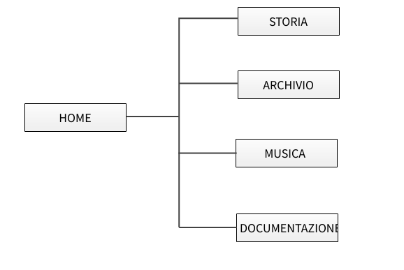
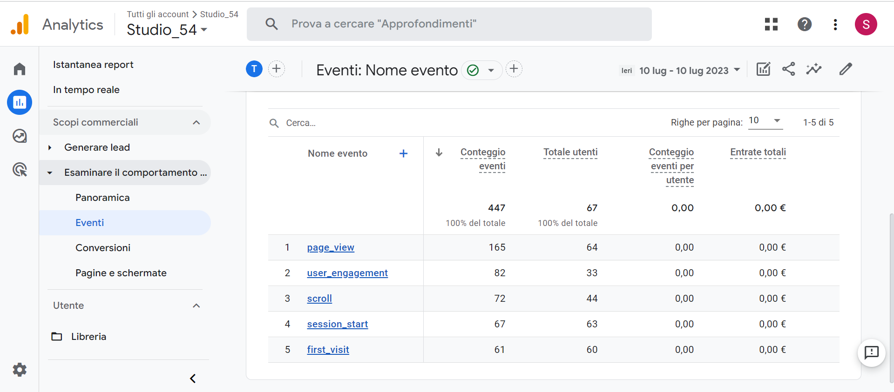

Il sito vuole dare una visione generale di cosa è stato lo Studio 54. Chiunque abbia un minimo interesse qui può trovare le informazioni più rilevanti e anche quelle principali al riguardo. Chiunque, abbia mai sentito parlare dello Studio 54 e vuole saperne un po' di più della noioisa descrizione di Wikipedia, può farlo partendo da qui, conscio del fatto che un fenomeno sociale, così come è stato definito, non è un qualcosa può essere semplificato in poche righe. Gli aneddoti e le storie su questo posto non finiranno mai di attirare la curiosità su questo posto.
Il sito ha come obiettivo quello di racchiudere, in maniera diversa da una semplice pagina di Wikipedia, le informazioni più rilevanti e anche quelle che più, attirano la curiosità di questo luogo.
Il target a cui si rivolge è quello di persone che per la prima volta si stanno avvicinando alla scoperta di questo luogo e possono iniziare a farlo partendo da questo sito che da una generale vista su tutto quello che è stato lo Studio 54.
Siti web che trattino l’argomento in maniera totale, se non che Wikipedia, non ne esistono. Sul tema si trovano molti più articoli delle più famose testate giornalistiche, video da YouTube, foto d’archivio e molto altro, ma non un sito dedicato solo allo Studio 54. Vi è solo un sito(studio54-disco2.blogspot.com) che si concentra solamente sui generi musicali trattati all’interno della discoteca.
Architettura e struttura del sito
WireFrame
Look and Feel
Il font utilizzato è Lexend, ricavato da GoogleFont ed è stato applicato a tutte le pagine. Avrei voluto applicare un font diverso per i titoli ma essendo le grafiche anni ’70 troppo grandi i titoli sarebbero risultati eccessivamente grandi occupando la maggior parte dello spazio. In cambio, ho distinto i titoli mettendo un colore di sfondo diverso dal “white-smoke” o dal “black”, ricavato da AdobeColor (#F9EAA7). Il giallo pastello è uno dei colori che rappresenta lo Studio 54, in alcuni casi il “4” del logo veniva colorato di giallo. Ho scelto questa sfumatura di giallo, più chiara, quasi a dare un effetto di trasparenza, per non appesantire troppo la vista e facilitare la lettura e anche per dare un tocco di colore a tutto il sito. Ho applicato lo stesso giallo ai link (interni ed esterni alla pagina) ogni qual volta si passa col muouse sul link e nel caso della barra del menù e del footer, la scritta si colora di giallo se è la pagina in cui ci troviamo in quel momento.
I linguaggi web utilizzati: HTML e CSS
Tools: Visual Studio Code come text editor, ChatGPT per alcuni pezzi di codice, FontAwesome per le icone, Google Fonts per i font, Adobe Color per i colori del sito, MockFlow per i Wireframe, Google Analytics per monitorare il sito, Instagram e Whatsapp per la condivisione, Github per la pubblicazione del sito.
Riguardo allo Studio 54 esistono pochi siti specializzati. Se esistono lo fanno trattando un solo aspetto della discoteca, come i generi musicali oppure gli infiniti articoli dei magazine che trattano ambiti particolari come il modo di vestire o il jet set che frequentava il club, che non danno una comprensione generale di tutta la discoteca. Per questo motivo ho scelto quattro ambiti principali che secondo me sono i più rivelanti, come appunto la Home che ne da un'anticipazione generale, e poi storia, archivio e musica che approfondiscono il tutto. Malgrado sul web si trovino moltissimi materiali, la maggior parte (nonché i contenuti più belli) sono in archivi privati che bisogna andare a cercare, per questo io nella pagina ne ho linkati alcuni, per renderne più facile la fruibilità.
Il sito vuole mostrare in linea generale quella che fu la discoteca più famosa di tutti i tempi e allo stesso tempo incrementare ancora di più la curiosità di coloro che cercano informazioni al riguardo, fornendo altri materiali, nascosti tra i meandri dell’internet e non automaticamente accessibili. L’obiettivo che mi sono posta è di 50 visualizzazioni singole del sito.
Il sito si rivolge a tutti coloro hanno sentito parlare per la prima volta dello Studio 54 e restandone impressionati vogliono pian piano approfondirne la conoscenza. Al di là della parte estetica lo Studio ha segnato profondamente la cultura in meno di 33 mesi. Se non che attraverso una curiosità personale si può sapere sempre di più al riguardo, andando a scavare nei meandri di internet, motivo per cui ci sono molte mie proposte che ho personalmente scovato nel tempo. Nel frattempo, chiunque incapperà in questo sito, scoprirà da dove nasce la discoteca così come è concepita al giorno d'oggi.
Il sito è stato promosso tramite Instagram e app di messaggistica.
Gli obiettivi preposti sono stati raggiunti. Ho ricevuto molti feedback da persone che non conoscevano la storia dello Studio 54 e che ne sono rimasti affascinati. Molti sono rimasti sorpresi anche delle curiosità come il processo di creazione della canzone degli CHIC.
Il sito ha raggiunto l'obiettivo di visualizzazioni:
